Human practices
Overview and project propose
We have two major aims in the human practice part of our project - to educate the public about the basics of biotechnology as well as the purpose, process and impact of our project, and to know about the needs and opinions of the local general public. To achieve them, we have organised a Lab Experience Week in our schools to enhance our schoolmates’ knowledge through different activities and having interviews or conducting surveys to receive suggestions and opinions from different stakeholders.
Questionnaire
We had constructed a questionnaire about the hobbies of buying new clothes and their view on spider silk and asked the students who joined our online biotechnology talk or biotech experience day to fill it in. We have received 93 responses so far. The following charts show our results.
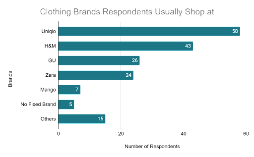
Chart 1: Results of question 1 (Which of the following clothing brand do you usually shop at?)
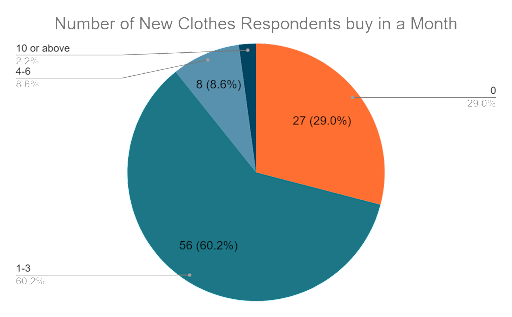
Chart 2: Results of question 2 (How many new clothes would you buy in a month on average?)
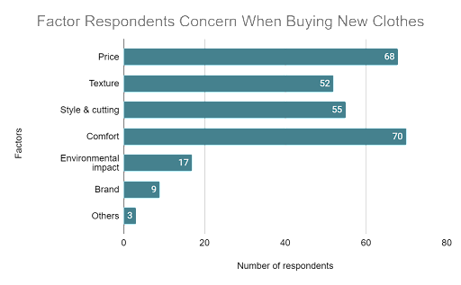
Chart 3: Results of question 3 (What are the factors you would concern when you buy new clothes?)
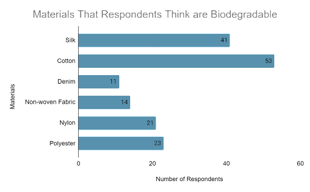
Chart 4: Results of question 4 (Which of the following conventional garments is biodegradable?)
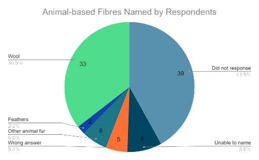
Chart 5: Results of question 5 (Can you name other animal-based fibres?)
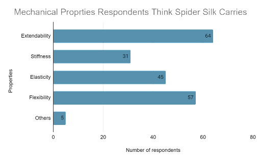
Chart 6: Results of question 6 (What mechanical properties does spider silk carry?)
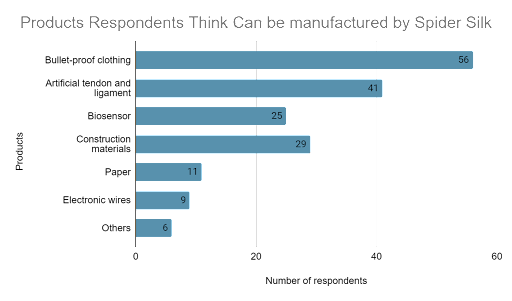
Chart 7: Results of question 7 (What products can be manufactured with spider silk?)
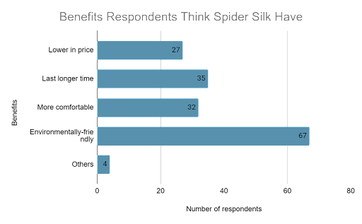
Chart 8: Results of question 8 (In your opinion, what are the benefits of using spider silk to replace traditional textile(e.g. cotton)? )
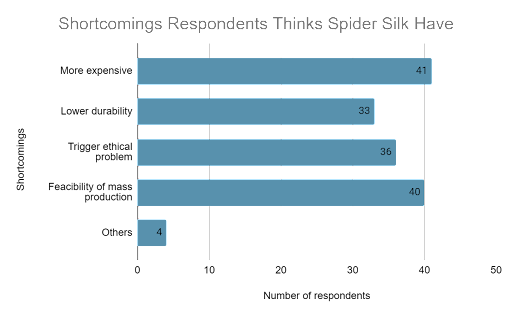
Chart 9: Results of question 9 (In your opinion, what are the shortcomings of using spider silk to replace traditional textile(e.g. cotton)?)
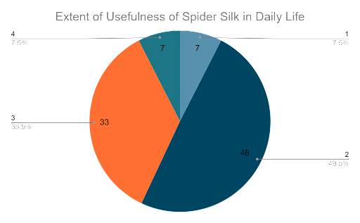
Chart 10: Results of question 10 (To what extent do you think spider silk could be useful in our daily life?)
(1 is the smallest, 4 is the largest)
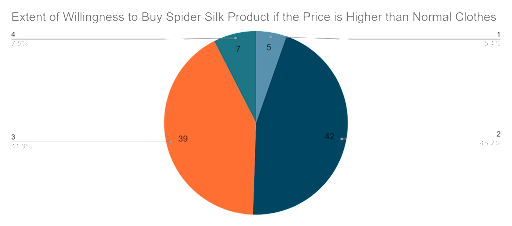
Chart 11: Results of question 11 (Would you choose to buy goods made by spider silk, even the cost price of spider silk clothing is higher than normal clothing?)
(1 is the most unwilling to, 4 is the most willing to)
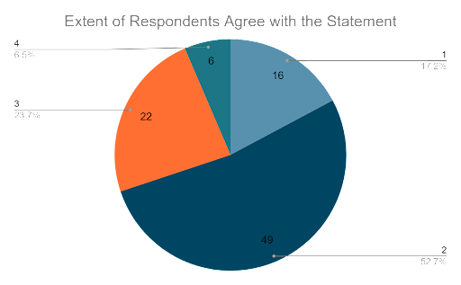
Chart 12: Results of question 12 (To what extent do you agree spider silk is the biomaterial and fabric of the future?)
(1 is the smallest, 4 is the largest)
The majority of our respondents buy 1-3 new clothes a month on average (Chart 2) and most of them usually buy clothes from cheap international clothing companies like Uniqlo, GU and H&M instead of more expensive brands such as Zara and Mango (Chart 1). Most of them are concerned about the price and comfort of the clothes(Chart 3). Also, The respondents who are willing to buy spider silk products if the price is higher than normal are less than a half (Chart 11). These results prove that the price of spider silk products needs to be comparable to ordinary clothes to gain support from most customers.
On top of that, we found that many respondents are unfamiliar with the properties of textile materials used now as well as those of spider silk. For example, more than 20% of them think nylon and polyester are biodegradable (Chart 4). Whatsmore, more than half of them failed to name any animal-based fibres or answered wrongly (Chart 6). Most respondents know that spider silk is environmentally friendly (Chart 8). However, more than half of the respondents do not have an optimistic view of the use of spider silk(Chart 10 & 12). These results show that there is an urgent need to educate our schoolmates.
Science communications
Interview with professor King Chow
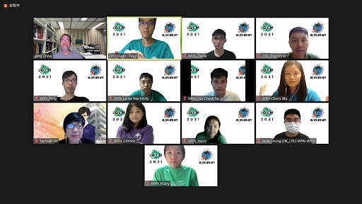
To facilitate higher efficiency in conducting our investigation and practicality of our project, we consulted Professor King Chow, Who is a specialist in genetics and evolutionary biology from Hong Kong University of Science and Technology. He listened to our brief presentations on our project progress and gave us some great advice to improvise our aim of the investigation and implementation plan to fill research gaps, and answered some of our technical problems, especially our lab work protocol and the interpretation of our gel electrophoresis results, which was a shot in the arm for our experimental progress. On top of that, he suggested how to modify our project to meet the local needs and the market and raise public recognition. We are honoured to have had him as our consultant.
Online Biosafety Seminar
Our members joined the biosafety seminar in the iGEM opening week and the online biosafety talk offered by the Open University of Hong Kong (renamed as the Hong Kong Metropolitan University) before starting any of our lab work as biosecurity is of vital importance. To forge a solid framework of biosafety, the seminars introduced different roles, specific practices, laboratory equipment and precautions thoroughly. We have gained essential concepts and deeper insight on conducting lab work, ensuring that everyone involved with IGEM considers safety and security seriously as an indispensable component of responsible research and innovation.
UST Symposium

In order to enhance science communication, a presentation of our SSS project was conducted on 11th Aug at a symposium hosted by HKUST. Illustrating an array of motivations, aims and rationale behind it, we could uncover our viewpoints and progress of the project. Thanks to the feedback and suggestions from professors and listeners regarding the feasibility and details of our project, it was cognized that there was plenty of room for improvement, propelling us to further ameliorate the project.
Highschool symposium
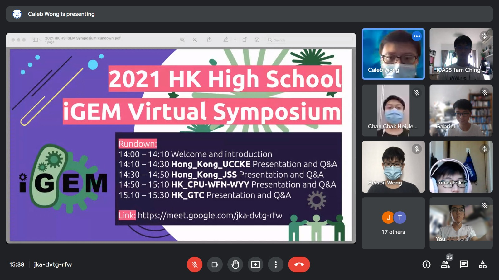
In order to receive treasurable advice and suggestions as well as sharing opinions on other local high school iGEM teams, including Hong_Kong_UCCKE, Hong_Kong_JSS and HK_GTC. We shared about our project and listen to others’ presentations in the high school symposium held on the 16th Oct. Other teams pointed out some problems that we had not considered thoroughly. We had gained many precious experiences and knowledge from it.
Communications with other stakeholders
In order to know and meet the local needs, as well as to know their opinion and get advice and suggestions on different aspects of our project to improve our project, we tried to conduct interviews or send surveys to the environmental organisations, the local textile groups and the general public.
Education
Booth and pull-up banner
.jpg) 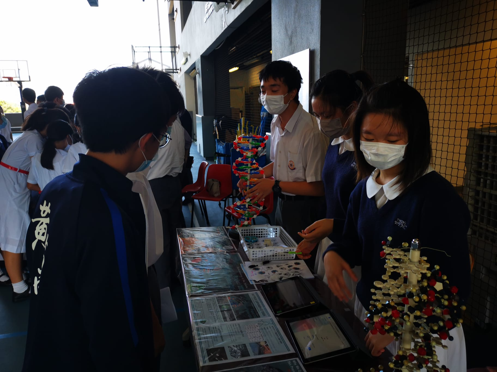
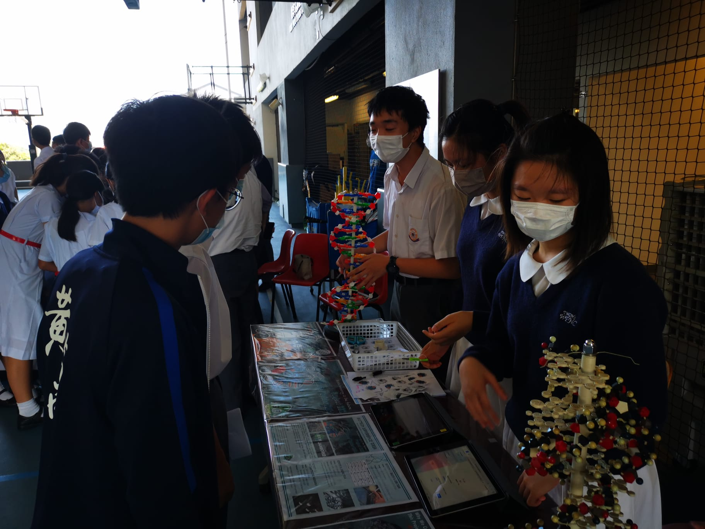
Seeing the lack of knowledge of spider silk and the issue of fast fashion among our schoolmates, we organised a huge variety of activities for them to know more about our project. We believe that we have to arouse students’ interest in the field of biotechnology and our project so that they can learn about them wholeheartedly and effectively.
To achieve this, we set up booths with our DNA molecule model and the foam board about our project on the playground at school during recess time. We introduced as much as possible to the students walking past, ranging from the model of DNA to the environmental impacts of fast fashion and also the initiatives, experimental processes and benefits of our project. Students’ curiosity about our project and biotechnology would then be piqued. Then, we would promote our lab tour, online biotech talk and the lab experience day to them. Usually, they were very willing to sign up for further activities. Thanks to our design team members, we made some stickers and keychains as souvenirs and delivered them to students who visited our booth.
Lab tour

Granted, ordinary students who have little access and approach to synthetic biology, a wide spectrum of lab equipment were introduced with their functions and features elaborated in the lab tour. During recess time, students were allowed to have a glimpse of our biotech laboratory, exposing them to a broader understanding of lab culture. Dabbling in the future of our field, students are able to apply theoretical concepts learned in the classroom to real process equipment and understanding process safety and hazard identification. Apart from advocating Biotechnology and STEM, fundamental concepts of our project were explained. It is critical for us to embrace new roles beyond the bench.
Biotech experience day

We understand that many of our junior students are interested in synthetic biology, yet they lack the opportunity to try out different laboratory apparatus. In light of this, we would like to organize this biotech experience day to enhance their understanding of microbiology. In this tasting workshop, students could try on the micropipette. Our student tutors instruct them on the correct way of using it, making sure that they master the technique. Moreover, we offer them a valuable chance of doing gel electrophoresis. In the meantime, student tutors explain the theory behind it, they also introduce DNA as well as chromosomes, which play an important role in inheritance.
Online Talk
.png)
It is observed that many Hong Kong students hop on the bandwagon and buy lots of fashionable clothes. They just want to follow the trend of fast fashion, buying clothes that they want rather than they really need. As our team aims to cope with consequences produced by fast fashion, we would like to grant this opportunity to educate our schoolmates on the impacts brought by fast fashion and to introduce the potentials and applications of Biotech. Furthermore, we explained simple parts of the lab work, like the principle of digestion and ligation. Promoting the broad field of biotechnology to our peers so that all of us can show our solicitude for the global environmental problem caused.